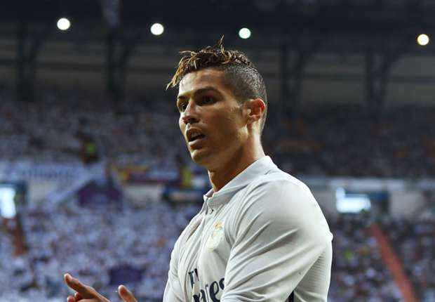

1. India beat Kyrgyzstan 1-0 in AFC Asian Cup Qualifier, Sunil Chhetri scores for the hosts
India beat Kyrgyzstan 1-0 in the AFC Asian Cup Qualifier in Bengaluru on Tuesday.
There was very little separating the two teams at the half-way mark as the scoreline remained locked at 0-0.
Kyrgyzstan enjoyed most of the possession but were unable to create enough chances.
In the second half, India created a brilliant opportunity when Sunil Chhetri ran through the opposition’s midfield to set-up an excellent goal for India.
Jeje was alert enough to collect the ball cleanly and feed it back to his skipper who completed the finish.
With this result, India are top of Group A with two wins in their two matches.
2. Latvia 0 Portugal 3: Ronaldo stars as Santos' side cruise to victory
Cristiano Ronaldo continued his incredible run of form as he scored twice and created another to ensure Portugal consolidated second place in World Cup Qualifying Group B with a convincing 3-0 win over Latvia.
Fresh from leading Real Madrid to Champions League glory with a brace against Juventus in Cardiff last weekend, Ronaldo was in inspired form once again as his predatory instincts came to the fore in an entertaining encounter in Riga.
Having twice been denied by the superb Andris Vanins, the 32-year-old was in the right place at the right time to tuck in Portugal's opener on the stroke of half-time.
Another point-blank header saw Ronaldo double his tally 63 minutes in, before he teed up strike-partner Andre Silva for Portugal's third soon after.
3. Scotland 2 England 2: Harry Kane to the rescue after Leigh Griffiths' late double
These are the United Kingdom’s days of tumult and uncertainty, when it feels like just about anything could happen,
even two free-kick goals from Leigh Griffiths within the space of three minutes that almost gave Scotland
their first 21st-century victory over the country they cherish defeating.
That was the equaliser from Harry Kane in the third minute of added time when the Hampden Park crowd thought that just possibly
they might win this World Cup qualifier and score their first victory over England at this ground since 1985.
They were denied by a moment of classically predatory Kane,
a man who had done little of note until he arrived unmarked at the far post to guide in a cross.
4. None can stop Ronaldo from winning Ballon'dor again this year

After winning 12th champions league and
33rd La liga title ,Cristiano Ronaldo is everyone's favourite for the Ballon'dor.
It has been amazing season for the portugese ,although he did not start well this season
due to injury in the Euro final but as the season reached its end Ronaldo reached his
beast form again.Hattrick against Bayern munich,Atletico and brace against Jueventus
are just some highlights of his Fantastic season